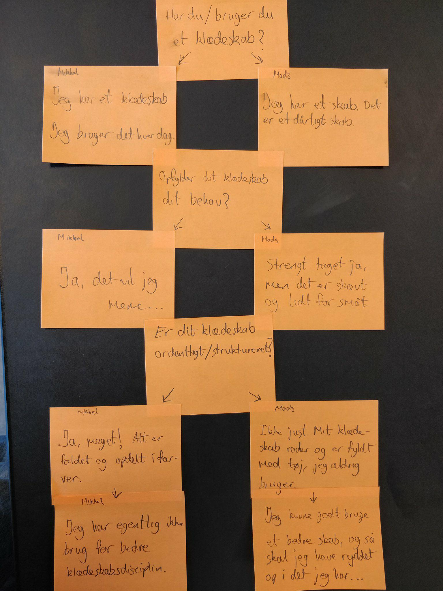

Børnenes tøj kan bruges igen, hvis der kommer flere børn
Er tøjet godt nok til at give videre
Tøjet ender med at ligge der, indtil det bliver smidt ud
Når man har travlt, er det svært at finde
Søn lægger beskidt tøj tilbage i skufferne
Har for mage ting - deraf pladsmangel
Ønskerne
Det kunne være vildt fedt at kunne komme af med det tøj, der ikke er brug for mere
Kunne godt bruge en hylde til det, jeg gere vil af med
Ville gerne bare kunne lægge det tøj, jeg ikke har brug for, på genbrug.
Ville gerne have mulighed for at opbevare det tøj, jeg ikke har brug for her og nu
UX Brugerinterview Mads

Spørgsmål og Svar
Spørgsmål: Har du/bruger du et klædeskab?
Svar: Jeg har et skab, men et dårlig skab.
Spørgsmål: Opfylder dit klædeskab dit behov?
Svar: Strengt taget ja, Men det er skævt og lidt for småt.
Spørgsmål: Er dit klælskab ordenligt struktureret?
Svar: Ikke just. Mit klædeskab roder og er fyldt med tøj, jeg aldrig bruger. Jeg Kunne godt bruge et bedre sab, og så skal jeg havde ryddet op i det jeg har.